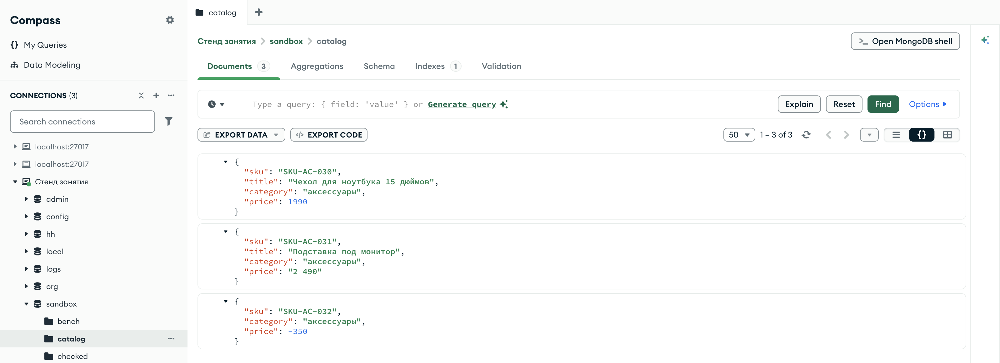
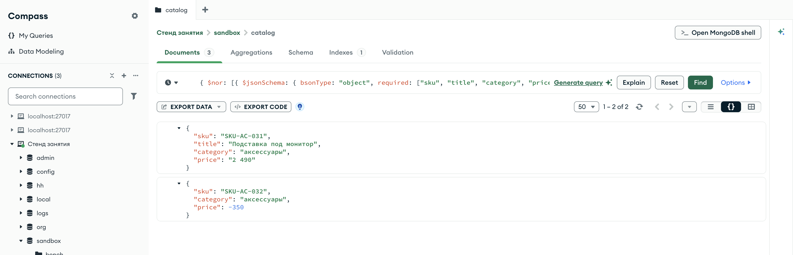
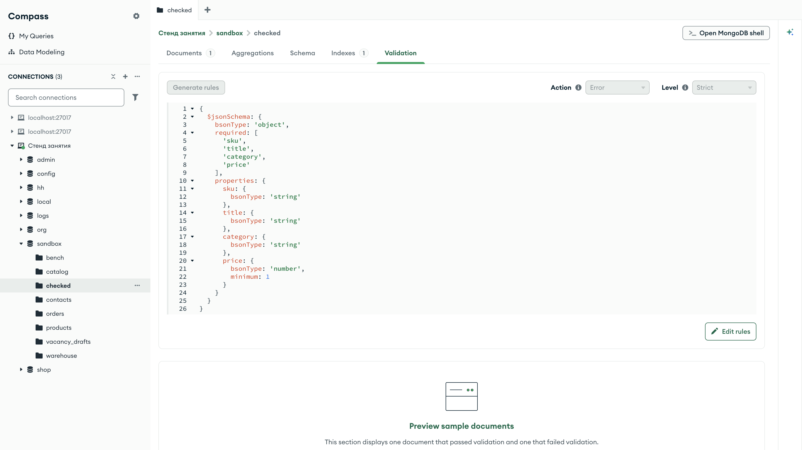
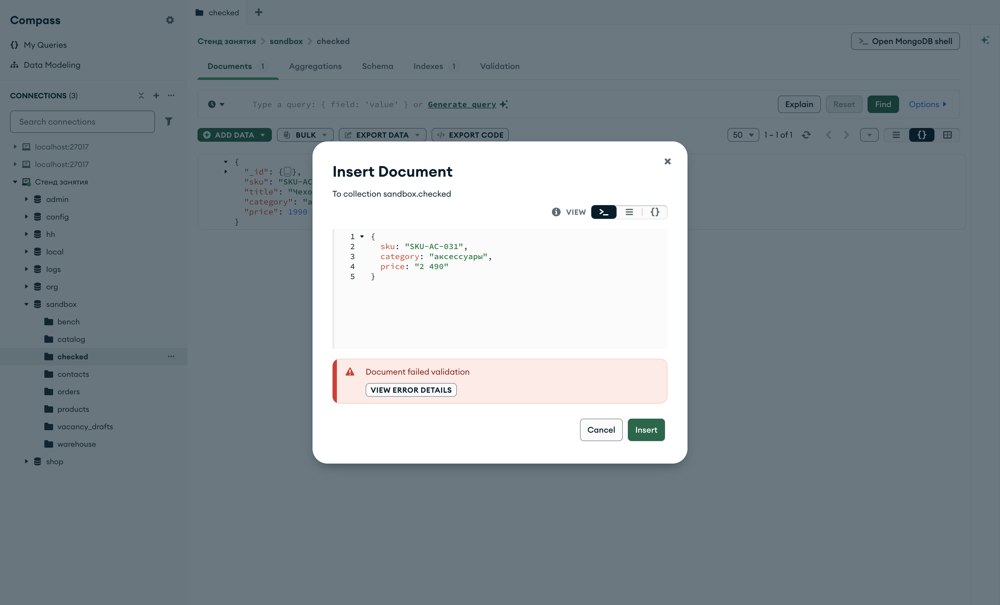
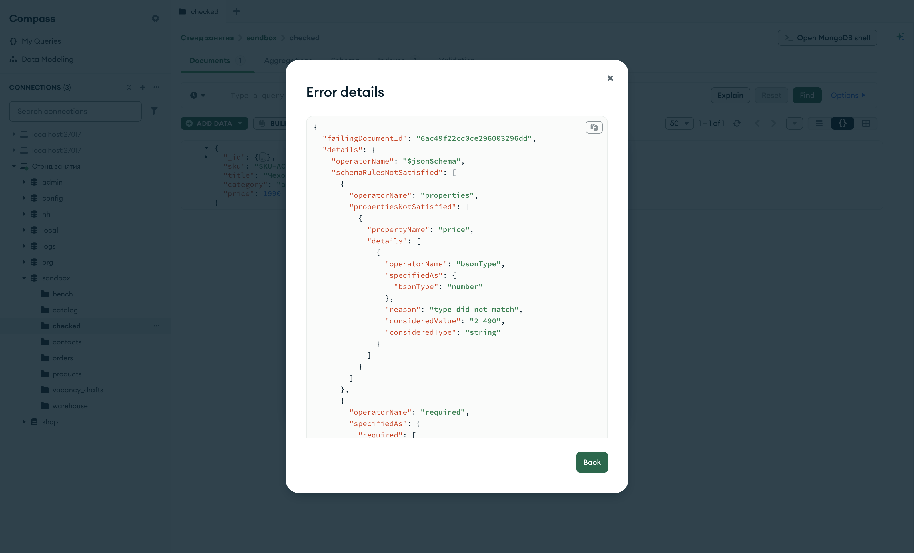
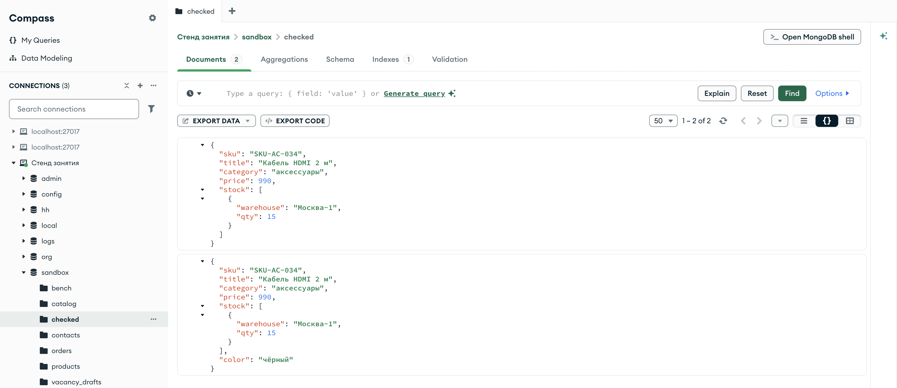
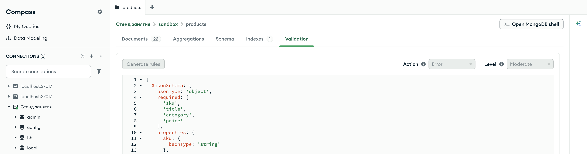
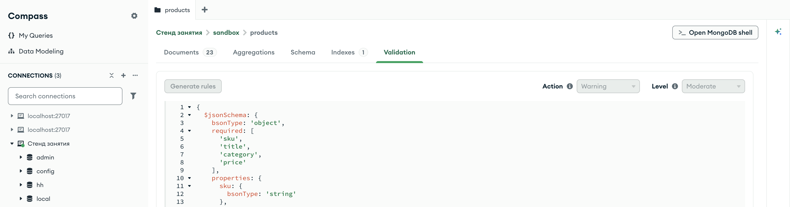
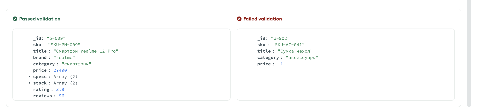

Справочник по MongoDB · модуль 3 · форма данных и скорость
3.1
Правила на уровне базы:
$jsonSchema
В этой главе разобрано, как описать, какими должны быть документы коллекции, и поручить проверку серверу. Описание записывается оператором $jsonSchema: какие поля обязательны, какого они типа и в каких границах лежат значения. Тот же оператор работает как условие запроса, и им проверяют документы, которые уже лежат в коллекции. Отдельно разобраны ответ сервера на отклонённый документ и включение правила для коллекции, в которой уже есть данные.
- Категория
- Форма данных
- Уровень
- Начальный
- Связанные темы
- Типы BSON (глава 1.2), вставка и обновление (главы 1.3 и 1.7),
$nor(глава 2.4),$existsи$type(глава 2.5) - Зачем это знать
- Не пускать в коллекцию документы без обязательных полей и со значениями неверного типа
Как запускать примеры этой главы
docker compose run --rm reset или скрипт из главы 1.0, §6.mongodb-glava-3.1-python.zip, 64 КБmongodb-glava-3.1-ruby.zip, 64 КБmongodb-glava-3.1-go.zip, 70 КБmongodb-glava-3.1-cpp.zip, 67 КБ — все примеры главы готовыми программами, базы и стенд в Docker. В README.md — запуск в Docker, если Compass нет или он не подключается, и на установленном сервере с Compass, а также что должна напечатать каждая программа.lessons/ch3_1.py — пример вставляется в конец файлаlessons/ch3_1.rb — пример вставляется в конец файлаlessons/ch3_1.go — пример внутрь скобок в конце main, функции и типы — выше mainlessons/ch3_1.cpp — пример внутрь скобок в конце main, функции — выше maincd lessons, затем python ch3_1.pycd lessons, затем python3 ch3_1.py · в Docker: docker compose run --rm python lessons/ch3_1.pycd lessons, затем ruby ch3_1.rb · в Docker: docker compose run --rm ruby lessons/ch3_1.rbcd lessons, затем go run ch3_1.go · в Docker: docker compose run --rm go lessons/ch3_1.gocd lessons, затем g++ -std=c++17 ch3_1.cpp -o prog $(pkg-config --cflags --libs libmongocxx1) && ./prog · в Docker: docker compose run --rm cpp lessons/ch3_1.cpp§1Сервер принимает любой документ
У коллекции MongoDB нет описания полей, как у таблицы в реляционной базе. Два документа одной коллекции могут иметь разный набор полей, а поле с одним и тем же именем может хранить в них значения разных типов. В главе 2.5 это было видно при чтении: условие по полю пропускает документы, в которых поле записано другим типом или отсутствует.
Пример записывает в песочницу три товара. Первый заполнен полностью. У второго цена записана строкой "2 490" — так её передаст программа, которая взяла значение из поля формы на сайте и не преобразовала в число. У третьего нет названия, а цена отрицательная. Коллекция catalog из базы sandbox открыта в заготовке главы; в начале примера она удаляется, чтобы повторный запуск начинал с пустой коллекции.
catalog.drop() catalog.insert_one({"sku": "SKU-AC-030", "title": "Чехол для ноутбука 15 дюймов", "category": "аксессуары", "price": 1990}) catalog.insert_one({"sku": "SKU-AC-031", "title": "Подставка под монитор", "category": "аксессуары", "price": "2 490"}) catalog.insert_one({"sku": "SKU-AC-032", "category": "аксессуары", "price": -350}) print("документов в коллекции:", catalog.count_documents({})) for doc in catalog.find({}, {"_id": 0}): print(doc)
catalog.drop(); catalog.insert_one(make_document( kvp("sku", "SKU-AC-030"), kvp("title", "Чехол для ноутбука 15 дюймов"), kvp("category", "аксессуары"), kvp("price", 1990))); catalog.insert_one(make_document( kvp("sku", "SKU-AC-031"), kvp("title", "Подставка под монитор"), kvp("category", "аксессуары"), kvp("price", "2 490"))); catalog.insert_one(make_document( kvp("sku", "SKU-AC-032"), kvp("category", "аксессуары"), kvp("price", -350))); std::cout << "документов в коллекции: " << catalog.count_documents(make_document()) << std::endl; mongocxx::options::find options; options.projection(make_document(kvp("_id", 0))); for (const auto& doc : catalog.find(make_document(), options)) { std::cout << bsoncxx::to_json(doc, bsoncxx::ExtendedJsonMode::k_relaxed) << std::endl; }
catalog.Drop(ctx) catalog.InsertOne(ctx, bson.D{ {Key: "sku", Value: "SKU-AC-030"}, {Key: "title", Value: "Чехол для ноутбука 15 дюймов"}, {Key: "category", Value: "аксессуары"}, {Key: "price", Value: 1990}}) catalog.InsertOne(ctx, bson.D{ {Key: "sku", Value: "SKU-AC-031"}, {Key: "title", Value: "Подставка под монитор"}, {Key: "category", Value: "аксессуары"}, {Key: "price", Value: "2 490"}}) catalog.InsertOne(ctx, bson.D{ {Key: "sku", Value: "SKU-AC-032"}, {Key: "category", Value: "аксессуары"}, {Key: "price", Value: -350}}) n, _ := catalog.CountDocuments(ctx, bson.D{}) fmt.Println("документов в коллекции:", n) cursor, _ := catalog.Find(ctx, bson.D{}, options.Find().SetProjection(bson.D{{Key: "_id", Value: 0}})) for cursor.Next(ctx) { var doc bson.D cursor.Decode(&doc) out, _ := bson.MarshalExtJSON(doc, false, false) fmt.Println(string(out)) }
catalog.drop catalog.insert_one({ "sku" => "SKU-AC-030", "title" => "Чехол для ноутбука 15 дюймов", "category" => "аксессуары", "price" => 1990 }) catalog.insert_one({ "sku" => "SKU-AC-031", "title" => "Подставка под монитор", "category" => "аксессуары", "price" => "2 490" }) catalog.insert_one({ "sku" => "SKU-AC-032", "category" => "аксессуары", "price" => -350 }) puts "документов в коллекции: " + catalog.count_documents({}).to_s catalog.find({}, projection: { "_id" => 0 }).each { |doc| puts doc.inspect }
документов в коллекции: 3
{'sku': 'SKU-AC-030', 'title': 'Чехол для ноутбука 15 дюймов', 'category': 'аксессуары', 'price': 1990}
{'sku': 'SKU-AC-031', 'title': 'Подставка под монитор', 'category': 'аксессуары', 'price': '2 490'}
{'sku': 'SKU-AC-032', 'category': 'аксессуары', 'price': -350}
документов в коллекции: 3
{ "sku" : "SKU-AC-030", "title" : "Чехол для ноутбука 15 дюймов", "category" : "аксессуары", "price" : 1990 }
{ "sku" : "SKU-AC-031", "title" : "Подставка под монитор", "category" : "аксессуары", "price" : "2 490" }
{ "sku" : "SKU-AC-032", "category" : "аксессуары", "price" : -350 }
документов в коллекции: 3
{"sku":"SKU-AC-030","title":"Чехол для ноутбука 15 дюймов","category":"аксессуары","price":1990}
{"sku":"SKU-AC-031","title":"Подставка под монитор","category":"аксессуары","price":"2 490"}
{"sku":"SKU-AC-032","category":"аксессуары","price":-350}
документов в коллекции: 3
{"sku"=>"SKU-AC-030", "title"=>"Чехол для ноутбука 15 дюймов", "category"=>"аксессуары", "price"=>1990}
{"sku"=>"SKU-AC-031", "title"=>"Подставка под монитор", "category"=>"аксессуары", "price"=>"2 490"}
{"sku"=>"SKU-AC-032", "category"=>"аксессуары", "price"=>-350}
Сервер записал все три документа и не сообщил об ошибке. Цена "2 490" хранится как строка, и проблема проявится при чтении: подставка не попадёт в выборку {"price": {"$lt": 3000}}, потому что строку с числом операторы сравнения не сравнивают (глава 2.2). Запросы из главы 2.5 находят такие документы уже после записи. Проверить документ до записи может сам сервер, если задать коллекции правило.

sandbox.catalog, проекция { _id: 0 }Вкладка Documents подписана числом 3, счётчик 1 – 3 of 3. У второго документа цена "2 490" в кавычках и зелёного цвета, как все строки; у первого и третьего цены 1990 и -350 синие, как числа. В третьем документе три поля, title среди них нет.
§2Правило $jsonSchema и проверка данных
Требования к документу MongoDB записывает в формате JSON Schema — это стандарт описания JSON-документов: какие в документе поля, какого типа значения, в каких пределах. Сервер поддерживает большую часть стандарта и добавляет своё ключевое слово bsonType — тип BSON вместо типа JSON. Описание правила само записано документом. Правило товара объявлено в заготовке главы в переменной schema, повторять его в примерах не нужно:
# Правило товара (§2 главы): обязательные поля и типы значений. schema = { "bsonType": "object", "required": ["sku", "title", "category", "price"], "properties": { "sku": {"bsonType": "string"}, "title": {"bsonType": "string"}, "category": {"bsonType": "string"}, "price": {"bsonType": "number", "minimum": 1}, }, }
// Правило товара (§2 главы): обязательные поля и типы значений. auto schema = make_document( kvp("bsonType", "object"), kvp("required", make_array("sku", "title", "category", "price")), kvp("properties", make_document( kvp("sku", make_document(kvp("bsonType", "string"))), kvp("title", make_document(kvp("bsonType", "string"))), kvp("category", make_document(kvp("bsonType", "string"))), kvp("price", make_document(kvp("bsonType", "number"), kvp("minimum", 1))))));
// Правило товара (§2 главы): обязательные поля и типы значений. schema := bson.D{ {Key: "bsonType", Value: "object"}, {Key: "required", Value: bson.A{"sku", "title", "category", "price"}}, {Key: "properties", Value: bson.D{ {Key: "sku", Value: bson.D{{Key: "bsonType", Value: "string"}}}, {Key: "title", Value: bson.D{{Key: "bsonType", Value: "string"}}}, {Key: "category", Value: bson.D{{Key: "bsonType", Value: "string"}}}, {Key: "price", Value: bson.D{{Key: "bsonType", Value: "number"}, {Key: "minimum", Value: 1}}}, }}, }
# Правило товара (§2 главы): обязательные поля и типы значений. schema = { "bsonType" => "object", "required" => ["sku", "title", "category", "price"], "properties" => { "sku" => { "bsonType" => "string" }, "title" => { "bsonType" => "string" }, "category" => { "bsonType" => "string" }, "price" => { "bsonType" => "number", "minimum" => 1 }, }, }
Ключи правила:
"bsonType": "object"— проверяемое значение должно быть документом. На верхнем уровне правила это выполняется всегда, ключ записывают, чтобы правило читалось как описание документа целиком.required— массив имён обязательных полей. Документ, в котором нет хотя бы одного из них, правилу не соответствует.properties— правила для отдельных полей. Ключ — имя поля, значение — правило для значения этого поля.{"bsonType": "string"}требует строку. Имена типов те же, что у оператора$type(глава 2.5, §4): для цены указан"number", он принимает любой числовой тип —int,long,doubleиdecimal. Ключ"minimum": 1требует число не меньше единицы.
Правило из properties проверяется, только если поле в документе есть. Документ без цены не нарушает {"bsonType": "number", "minimum": 1}; его отклонит required. Поэтому обязательные поля перечисляют в required, а их типы и границы — в properties.
$jsonSchema — оператор запроса, как $exists и $type. Его ставят в фильтр find или count_documents, и документ попадает в результат, если соответствует правилу. Так проверяют данные, которые уже лежат в коллекции. Пример считает товары, которые соответствуют правилу, в shop.products и в catalog из §1, а затем выводит документы catalog, которые правилу не соответствуют: их отбирает $nor с одним условием (глава 2.4).
print("shop.products, подходят: ", products.count_documents({"$jsonSchema": schema})) print("sandbox.catalog, подходят:", catalog.count_documents({"$jsonSchema": schema})) for doc in catalog.find({"$nor": [{"$jsonSchema": schema}]}, {"_id": 0, "sku": 1, "title": 1, "price": 1}): print("не подходит:", doc)
std::cout << "shop.products, подходят: " << products.count_documents(make_document(kvp("$jsonSchema", schema.view()))) << std::endl; std::cout << "sandbox.catalog, подходят: " << catalog.count_documents(make_document(kvp("$jsonSchema", schema.view()))) << std::endl; mongocxx::options::find options; options.projection(make_document(kvp("_id", 0), kvp("sku", 1), kvp("title", 1), kvp("price", 1))); for (const auto& doc : catalog.find(make_document(kvp("$nor", make_array(make_document(kvp("$jsonSchema", schema.view()))))), options)) { std::cout << "не подходит: " << bsoncxx::to_json(doc, bsoncxx::ExtendedJsonMode::k_relaxed) << std::endl; }
vMagazine, _ := products.CountDocuments(ctx, bson.D{{Key: "$jsonSchema", Value: schema}}) vKataloge, _ := catalog.CountDocuments(ctx, bson.D{{Key: "$jsonSchema", Value: schema}}) fmt.Println("shop.products, подходят: ", vMagazine) fmt.Println("sandbox.catalog, подходят:", vKataloge) cursor, _ := catalog.Find(ctx, bson.D{{Key: "$nor", Value: bson.A{bson.D{{Key: "$jsonSchema", Value: schema}}}}}, options.Find().SetProjection(bson.D{{Key: "_id", Value: 0}, {Key: "sku", Value: 1}, {Key: "title", Value: 1}, {Key: "price", Value: 1}})) for cursor.Next(ctx) { var doc bson.D cursor.Decode(&doc) out, _ := bson.MarshalExtJSON(doc, false, false) fmt.Println("не подходит:", string(out)) }
puts "shop.products, подходят: " + products.count_documents({ "$jsonSchema" => schema }).to_s puts "sandbox.catalog, подходят: " + catalog.count_documents({ "$jsonSchema" => schema }).to_s catalog.find({ "$nor" => [{ "$jsonSchema" => schema }] }, projection: { "_id" => 0, "sku" => 1, "title" => 1, "price" => 1 }) .each { |doc| puts "не подходит: " + doc.inspect }
shop.products, подходят: 21
sandbox.catalog, подходят: 1
не подходит: {'sku': 'SKU-AC-031', 'title': 'Подставка под монитор', 'price': '2 490'}
не подходит: {'sku': 'SKU-AC-032', 'price': -350}
shop.products, подходят: 21
sandbox.catalog, подходят: 1
не подходит: { "sku" : "SKU-AC-031", "title" : "Подставка под монитор", "price" : "2 490" }
не подходит: { "sku" : "SKU-AC-032", "price" : -350 }
shop.products, подходят: 21
sandbox.catalog, подходят: 1
не подходит: {"sku":"SKU-AC-031","title":"Подставка под монитор","price":"2 490"}
не подходит: {"sku":"SKU-AC-032","price":-350}
shop.products, подходят: 21
sandbox.catalog, подходят: 1
не подходит: {"sku"=>"SKU-AC-031", "title"=>"Подставка под монитор", "price"=>"2 490"}
не подходит: {"sku"=>"SKU-AC-032", "price"=>-350}
Все 21 товар магазина соответствуют правилу. В catalog правилу соответствует один документ из трёх. Два других выведены: у подставки цена записана строкой, у третьего товара нет поля title, а цена меньше единицы. Правило находит те же ошибки, что запросы главы 2.5, и записано одним документом. Этот же документ можно передать серверу как требование к коллекции, тогда сервер проверяет по нему каждую запись.

sandbox.catalog, фильтр { $nor: [{ $jsonSchema: { … } }] } с правилом товараПравило в поле фильтра записано так же, как в коде, одной строкой; Compass показывает её начало. Счётчик 1 – 2 of 2: в выдаче подставка с ценой-строкой и товар без названия, чехол в неё не попал.
§3Коллекция с правилом: validator
Правило, которое сервер проверяет при каждой записи в коллекцию, называется валидатором (validator). Оно хранится в настройках коллекции. При вставке и при обновлении сервер проверяет документ в том виде, в каком он будет записан, и отклоняет запись, если документ правилу не соответствует. Это похоже на контроль на проходной: документ, который не прошёл проверку, в коллекцию не попадает.
В модуле 1 коллекции появлялись сами при первой вставке. Коллекцию с валидатором создают явно, передавая правило в параметрах создания:
Метод базы create_collection(имя, validator=...) создаёт коллекцию и возвращает объект коллекции. Значение validator — документ условия; правило $jsonSchema стоит в нём как оператор запроса, так же как в фильтре §2.
Запись sandbox[:checked, validator: ...] создаёт объект коллекции с параметрами, но на сервер ничего не отправляет; коллекцию создаёт вызов create. Значение validator — документ условия; правило $jsonSchema стоит в нём как оператор запроса, так же как в фильтре §2.
Метод базы CreateCollection принимает имя коллекции и параметры, собранные options.CreateCollection(); правило передаёт SetValidator. Значение валидатора — документ условия; правило $jsonSchema стоит в нём как оператор запроса, так же как в фильтре §2. Объект коллекции после создания берётся обычным Collection.
Метод базы create_collection принимает имя коллекции и документ параметров, в котором валидатор записан под ключом "validator", и возвращает объект коллекции. Значение валидатора — документ условия; правило $jsonSchema стоит в нём как оператор запроса, так же как в фильтре §2.
Пример удаляет коллекцию checked, если она осталась от прошлого запуска, создаёт её с правилом товара и пробует записать два документа из §1: чехол и товар без названия.
from pymongo.errors import WriteError sandbox.drop_collection("checked") checked = sandbox.create_collection("checked", validator={"$jsonSchema": schema}) checked.insert_one({"sku": "SKU-AC-030", "title": "Чехол для ноутбука 15 дюймов", "category": "аксессуары", "price": 1990}) print("чехол записан") try: checked.insert_one({"sku": "SKU-AC-032", "category": "аксессуары", "price": -350}) print("товар без названия записан") except WriteError as e: print("товар без названия отклонён, код ошибки", e.code) print("документов в коллекции:", checked.count_documents({}))
sandbox["checked"].drop(); auto checked = sandbox.create_collection("checked", make_document(kvp("validator", make_document(kvp("$jsonSchema", schema.view()))))); checked.insert_one(make_document( kvp("sku", "SKU-AC-030"), kvp("title", "Чехол для ноутбука 15 дюймов"), kvp("category", "аксессуары"), kvp("price", 1990))); std::cout << "чехол записан" << std::endl; try { checked.insert_one(make_document( kvp("sku", "SKU-AC-032"), kvp("category", "аксессуары"), kvp("price", -350))); std::cout << "товар без названия записан" << std::endl; } catch (const mongocxx::operation_exception& e) { std::cout << "товар без названия отклонён, код ошибки " << e.code().value() << std::endl; } std::cout << "документов в коллекции: " << checked.count_documents(make_document()) << std::endl;
sandbox.Collection("checked").Drop(ctx) sandbox.CreateCollection(ctx, "checked", options.CreateCollection().SetValidator(bson.D{{Key: "$jsonSchema", Value: schema}})) checked := sandbox.Collection("checked") checked.InsertOne(ctx, bson.D{ {Key: "sku", Value: "SKU-AC-030"}, {Key: "title", Value: "Чехол для ноутбука 15 дюймов"}, {Key: "category", Value: "аксессуары"}, {Key: "price", Value: 1990}}) fmt.Println("чехол записан") _, err := checked.InsertOne(ctx, bson.D{ {Key: "sku", Value: "SKU-AC-032"}, {Key: "category", Value: "аксессуары"}, {Key: "price", Value: -350}}) var we mongo.WriteException if errors.As(err, &we) { fmt.Println("товар без названия отклонён, код ошибки", we.WriteErrors[0].Code) } else { fmt.Println("товар без названия записан") } n, _ := checked.CountDocuments(ctx, bson.D{}) fmt.Println("документов в коллекции:", n)
sandbox[:checked].drop
checked = sandbox[:checked, validator: { "$jsonSchema" => schema }]
checked.create
checked.insert_one({ "sku" => "SKU-AC-030", "title" => "Чехол для ноутбука 15 дюймов",
"category" => "аксессуары", "price" => 1990 })
puts "чехол записан"
begin
checked.insert_one({ "sku" => "SKU-AC-032", "category" => "аксессуары", "price" => -350 })
puts "товар без названия записан"
rescue Mongo::Error::OperationFailure => e
puts "товар без названия отклонён, код ошибки #{e.code}"
end
puts "документов в коллекции: " + checked.count_documents({}).to_s
чехол записан товар без названия отклонён, код ошибки 121 документов в коллекции: 1
чехол записан товар без названия отклонён, код ошибки 121 документов в коллекции: 1
чехол записан товар без названия отклонён, код ошибки 121 документов в коллекции: 1
чехол записан товар без названия отклонён, код ошибки 121 документов в коллекции: 1
Чехол прошёл проверку и записан. Товар без названия сервер отклонил: вставка завершилась ошибкой с кодом 121. Это код DocumentValidationFailure, текст ошибки — Document failed validation. В коллекции один документ: отклонённый не записан ни целиком, ни частично.
Отказ сервера PyMongo выбрасывает исключением WriteError из модуля pymongo.errors; код ошибки — в его поле code. Без try программа остановилась бы на второй вставке, и последняя строка не была бы напечатана.
Отказ сервера драйвер выбрасывает исключением Mongo::Error::OperationFailure; код ошибки — в методе code. Без begin … rescue программа остановилась бы на второй вставке, и последняя строка не была бы напечатана.
InsertOne возвращает ошибку типа mongo.WriteException. Функция errors.As проверяет, что ошибка этого типа, и записывает её в переменную we; код отказа — в we.WriteErrors[0].Code, первой и единственной ошибке записи. Если ошибки нет, errors.As возвращает false.
Отказ сервера драйвер выбрасывает исключением mongocxx::operation_exception; код ошибки возвращает e.code().value(). Без try программа завершилась бы на второй вставке, и последняя строка не была бы напечатана.

sandbox.checked, вкладка ValidationПравило коллекции показывает вкладка Validation. В редакторе — документ валидатора: оператор $jsonSchema и под ним правило товара, разложенное по строкам. Справа вверху два списка: Action — значение validationAction, сейчас Error, и Level — значение validationLevel, сейчас Strict; оба параметра разобраны в §6 и §7. Вкладка Documents подписана числом 1: в коллекции один чехол.
§4Почему документ отклонён: errInfo
Код 121 сообщает только, что правило нарушено. Какие условия не выполнены, сервер пишет в поле ответа errInfo. В нём два поля: failingDocumentId — _id отклонённого документа — и details с разбором. В details лежит список schemaRulesNotSatisfied, по элементу на каждое невыполненное ключевое слово верхнего уровня правила:
- элемент с
"operatorName": "required"перечисляет недостающие поля в массивеmissingProperties; - элемент с
"operatorName": "properties"перечисляет поля с ошибками в массивеpropertiesNotSatisfied. Для каждого поля указаны имя (propertyName) и списокdetails: какое ключевое слово не выполнено (operatorName) и причина (reason).
Пример пробует записать в коллекцию checked из §3 подставку из §1 — без названия и с ценой строкой — и печатает причины отказа.
from pymongo.errors import WriteError checked = sandbox["checked"] try: checked.insert_one({"sku": "SKU-AC-031", "category": "аксессуары", "price": "2 490"}) except WriteError as e: print("подставка отклонена, причины:") for rule in e.details["errInfo"]["details"]["schemaRulesNotSatisfied"]: if rule["operatorName"] == "required": print(" нет обязательных полей:", rule["missingProperties"]) if rule["operatorName"] == "properties": for prop in rule["propertiesNotSatisfied"]: for detail in prop["details"]: print(" поле " + prop["propertyName"] + ":", detail["operatorName"], "—", detail["reason"])
auto checked = sandbox["checked"]; try { checked.insert_one(make_document( kvp("sku", "SKU-AC-031"), kvp("category", "аксессуары"), kvp("price", "2 490"))); } catch (const mongocxx::operation_exception& e) { std::cout << "подставка отклонена, причины:" << std::endl; auto info = e.raw_server_error()->view()["writeErrors"][0]["errInfo"]; for (auto&& item : info["details"]["schemaRulesNotSatisfied"].get_array().value) { auto rule = item.get_document().value; std::string name{rule["operatorName"].get_string().value}; if (name == "required") { std::cout << " нет обязательных полей:"; for (auto&& field : rule["missingProperties"].get_array().value) { std::cout << " " << field.get_string().value; } std::cout << std::endl; } if (name == "properties") { for (auto&& prop : rule["propertiesNotSatisfied"].get_array().value) { for (auto&& detail : prop["details"].get_array().value) { std::cout << " поле " << prop["propertyName"].get_string().value << ": " << detail["operatorName"].get_string().value << " — " << detail["reason"].get_string().value << std::endl; } } } } }
// Часть errInfo, которую читает пример: какие правила схемы не выполнены. type schemaRule struct { OperatorName string `bson:"operatorName"` MissingProperties []string `bson:"missingProperties"` PropertiesNotSatisfied []struct { PropertyName string `bson:"propertyName"` Details []struct { OperatorName string `bson:"operatorName"` Reason string `bson:"reason"` } `bson:"details"` } `bson:"propertiesNotSatisfied"` } checked := sandbox.Collection("checked") _, err := checked.InsertOne(ctx, bson.D{ {Key: "sku", Value: "SKU-AC-031"}, {Key: "category", Value: "аксессуары"}, {Key: "price", Value: "2 490"}}) var we mongo.WriteException if errors.As(err, &we) { var info struct { Details struct { Rules []schemaRule `bson:"schemaRulesNotSatisfied"` } `bson:"details"` } bson.Unmarshal(we.WriteErrors[0].Details, &info) fmt.Println("подставка отклонена, причины:") for _, rule := range info.Details.Rules { if rule.OperatorName == "required" { fmt.Println(" нет обязательных полей:", rule.MissingProperties) } if rule.OperatorName == "properties" { for _, prop := range rule.PropertiesNotSatisfied { for _, detail := range prop.Details { fmt.Println(" поле "+prop.PropertyName+":", detail.OperatorName, "—", detail.Reason) } } } } }
checked = sandbox[:checked] begin checked.insert_one({ "sku" => "SKU-AC-031", "category" => "аксессуары", "price" => "2 490" }) rescue Mongo::Error::OperationFailure => e puts "подставка отклонена, причины:" e.details["details"]["schemaRulesNotSatisfied"].each do |rule| if rule["operatorName"] == "required" puts " нет обязательных полей: #{rule["missingProperties"]}" end if rule["operatorName"] == "properties" rule["propertiesNotSatisfied"].each do |prop| prop["details"].each do |detail| puts " поле #{prop["propertyName"]}: #{detail["operatorName"]} — #{detail["reason"]}" end end end end end
подставка отклонена, причины: поле price: bsonType — type did not match нет обязательных полей: ['title']
подставка отклонена, причины: поле price: bsonType — type did not match нет обязательных полей: title
подставка отклонена, причины: поле price: bsonType — type did not match нет обязательных полей: [title]
подставка отклонена, причины: поле price: bsonType — type did not match нет обязательных полей: ["title"]
Нарушены два условия. У поля price не выполнено ключевое слово bsonType, причина type did not match — тип значения не совпал с указанным в правиле. И в документе нет обязательного поля title. Сервер сообщил обе причины сразу и не остановился на первом нарушении.
В исключении WriteError поле details хранит описание ошибки записи целиком; errInfo — один из его ключей.
Метод details исключения возвращает содержимое errInfo, поэтому разбор начинается сразу с ключа "details".
Поле Details ошибки записи хранит errInfo в виде bson.Raw — документа BSON без разбора. bson.Unmarshal раскладывает его в структуру: поля структуры связаны с именами в документе тегами bson:"…", а поля, которых в структуре нет, пропускаются. Тип schemaRule объявлен над main.
Метод raw_server_error() исключения возвращает весь ответ сервера. Ошибки записи лежат в нём массивом writeErrors, и errInfo берётся из его первого элемента. Значения достаются по цепочке [], массивы — через get_array().value, строки — через get_string().value.
Строка «нет обязательных полей: title» называет поле, которое нужно добавить в документ. Такой разбор пишут в журнал приложения или возвращают пользователю, который заполнял форму.

sandbox.checked через Add data → Insert documentCompass записывает документ той же командой вставки, что и драйвер, поэтому правило действует и здесь. После нажатия Insert окно не закрылось: под документом красная плашка с текстом сервера Document failed validation и кнопкой View error details.

errInfoКнопка открывает errInfo целиком. Сверху failingDocumentId — _id, который документ получил при отправке: в окне вставки его не было. Ниже тот же разбор, что напечатал пример: у price не выполнено bsonType, причина type did not match. Сервер добавляет и подробности, которые пример не печатал: specifiedAs — условие из правила, consideredValue — значение из документа, "2 490", и consideredType — его тип, string. Элемент про required ниже, его видно при прокрутке окна.
§5Ключевые слова правила
Правило из §2 проверяет наличие полей и их типы. Остальные ключевые слова задают границы значений. Основные из них собраны в таблице; каждое ставится в правило поля внутри properties.
| Ключевое слово | Что требует | Пример |
|---|---|---|
bsonType | тип BSON; можно перечислить несколько массивом | "bsonType": ["string", "null"] |
minimum, maximum | число не меньше и не больше границы | "minimum": 1 |
minLength, maxLength | длина строки в знаках | "minLength": 3 |
pattern | строка подходит под регулярное выражение (глава 2.7) | "pattern": "^SKU-[A-Z]{2}-[0-9]{3}$" |
enum | значение из списка | "enum": ["ноутбуки", "смартфоны"] |
items | правило для каждого элемента массива | "items": {"bsonType": "object"} |
minItems, maxItems | число элементов массива | "minItems": 1 |
required, properties | обязательные поля и правила полей вложенного документа | как на верхнем уровне |
additionalProperties | false запрещает поля, которых нет в properties | "additionalProperties": false |
Пример создаёт коллекцию checked заново с полным правилом товара. К правилу из §2 добавлены четыре условия: артикул по шаблону SKU-, две латинские буквы, дефис и три цифры; название не короче трёх знаков; категория из пяти категорий магазина; склады — массив документов, в каждом обязательны склад и количество, а количество не меньше нуля. Правило для элементов массива задаёт items, и внутри него снова стоят required и properties, как для вложенного документа.
Затем пример пробует записать семь вариантов кабеля. Первый соответствует правилу; каждый следующий отличается от него одним полем.
from pymongo.errors import WriteError full = { "bsonType": "object", "required": ["sku", "title", "category", "price"], "properties": { "sku": {"bsonType": "string", "pattern": "^SKU-[A-Z]{2}-[0-9]{3}$"}, "title": {"bsonType": "string", "minLength": 3}, "category": {"enum": ["ноутбуки", "смартфоны", "периферия", "комплектующие", "аксессуары"]}, "price": {"bsonType": "number", "minimum": 1}, "stock": { "bsonType": "array", "items": { "bsonType": "object", "required": ["warehouse", "qty"], "properties": {"qty": {"bsonType": "number", "minimum": 0}}, }, }, }, } sandbox.drop_collection("checked") checked = sandbox.create_collection("checked", validator={"$jsonSchema": full}) cable = {"sku": "SKU-AC-034", "title": "Кабель HDMI 2 м", "category": "аксессуары", "price": 990, "stock": [{"warehouse": "Москва-1", "qty": 15}]} candidates = [ ("всё по правилу", cable), ("категория не из списка", {**cable, "category": "кабели"}), ("артикул не по шаблону", {**cable, "sku": "AC-034"}), ("название короче трёх знаков", {**cable, "title": "ТВ"}), ("на складе нет количества", {**cable, "stock": [{"warehouse": "Москва-1"}]}), ("количество меньше нуля", {**cable, "stock": [{"warehouse": "Москва-1", "qty": -2}]}), ("поле, которого нет в правиле", {**cable, "color": "чёрный"}), ] for label, doc in candidates: try: checked.insert_one(doc) print("принят: ", label) except WriteError: print("отклонён:", label)
auto full = make_document( kvp("bsonType", "object"), kvp("required", make_array("sku", "title", "category", "price")), kvp("properties", make_document( kvp("sku", make_document(kvp("bsonType", "string"), kvp("pattern", "^SKU-[A-Z]{2}-[0-9]{3}$"))), kvp("title", make_document(kvp("bsonType", "string"), kvp("minLength", 3))), kvp("category", make_document(kvp("enum", make_array("ноутбуки", "смартфоны", "периферия", "комплектующие", "аксессуары")))), kvp("price", make_document(kvp("bsonType", "number"), kvp("minimum", 1))), kvp("stock", make_document( kvp("bsonType", "array"), kvp("items", make_document( kvp("bsonType", "object"), kvp("required", make_array("warehouse", "qty")), kvp("properties", make_document(kvp("qty", make_document(kvp("bsonType", "number"), kvp("minimum", 0)))))))))))); sandbox["checked"].drop(); auto checked = sandbox.create_collection("checked", make_document(kvp("validator", make_document(kvp("$jsonSchema", full.view()))))); // верный товар; остальные кандидаты отличаются от него одним полем auto stock = [](int qty) { return make_array(make_document(kvp("warehouse", "Москва-1"), kvp("qty", qty))); }; std::vector<std::pair<std::string, bsoncxx::document::value>> candidates; candidates.emplace_back("всё по правилу", make_document( kvp("sku", "SKU-AC-034"), kvp("title", "Кабель HDMI 2 м"), kvp("category", "аксессуары"), kvp("price", 990), kvp("stock", stock(15)))); candidates.emplace_back("категория не из списка", make_document( kvp("sku", "SKU-AC-034"), kvp("title", "Кабель HDMI 2 м"), kvp("category", "кабели"), kvp("price", 990), kvp("stock", stock(15)))); candidates.emplace_back("артикул не по шаблону", make_document( kvp("sku", "AC-034"), kvp("title", "Кабель HDMI 2 м"), kvp("category", "аксессуары"), kvp("price", 990), kvp("stock", stock(15)))); candidates.emplace_back("название короче трёх знаков", make_document( kvp("sku", "SKU-AC-034"), kvp("title", "ТВ"), kvp("category", "аксессуары"), kvp("price", 990), kvp("stock", stock(15)))); candidates.emplace_back("на складе нет количества", make_document( kvp("sku", "SKU-AC-034"), kvp("title", "Кабель HDMI 2 м"), kvp("category", "аксессуары"), kvp("price", 990), kvp("stock", make_array(make_document(kvp("warehouse", "Москва-1")))))); candidates.emplace_back("количество меньше нуля", make_document( kvp("sku", "SKU-AC-034"), kvp("title", "Кабель HDMI 2 м"), kvp("category", "аксессуары"), kvp("price", 990), kvp("stock", stock(-2)))); candidates.emplace_back("поле, которого нет в правиле", make_document( kvp("sku", "SKU-AC-034"), kvp("title", "Кабель HDMI 2 м"), kvp("category", "аксессуары"), kvp("price", 990), kvp("stock", stock(15)), kvp("color", "чёрный"))); for (const auto& [label, doc] : candidates) { try { checked.insert_one(doc.view()); std::cout << "принят: " << label << std::endl; } catch (const mongocxx::operation_exception&) { std::cout << "отклонён: " << label << std::endl; } }
full := bson.D{
{Key: "bsonType", Value: "object"},
{Key: "required", Value: bson.A{"sku", "title", "category", "price"}},
{Key: "properties", Value: bson.D{
{Key: "sku", Value: bson.D{{Key: "bsonType", Value: "string"}, {Key: "pattern", Value: "^SKU-[A-Z]{2}-[0-9]{3}$"}}},
{Key: "title", Value: bson.D{{Key: "bsonType", Value: "string"}, {Key: "minLength", Value: 3}}},
{Key: "category", Value: bson.D{{Key: "enum", Value: bson.A{"ноутбуки", "смартфоны", "периферия", "комплектующие", "аксессуары"}}}},
{Key: "price", Value: bson.D{{Key: "bsonType", Value: "number"}, {Key: "minimum", Value: 1}}},
{Key: "stock", Value: bson.D{
{Key: "bsonType", Value: "array"},
{Key: "items", Value: bson.D{
{Key: "bsonType", Value: "object"},
{Key: "required", Value: bson.A{"warehouse", "qty"}},
{Key: "properties", Value: bson.D{
{Key: "qty", Value: bson.D{{Key: "bsonType", Value: "number"}, {Key: "minimum", Value: 0}}},
}},
}},
}},
}},
}
sandbox.Collection("checked").Drop(ctx)
sandbox.CreateCollection(ctx, "checked",
options.CreateCollection().SetValidator(bson.D{{Key: "$jsonSchema", Value: full}}))
checked := sandbox.Collection("checked")
// base — товар, который проходит правило; with возвращает его копию,
// где одно поле заменено или добавлено
base := func() bson.D {
return bson.D{
{Key: "sku", Value: "SKU-AC-034"},
{Key: "title", Value: "Кабель HDMI 2 м"},
{Key: "category", Value: "аксессуары"},
{Key: "price", Value: 990},
{Key: "stock", Value: bson.A{bson.D{{Key: "warehouse", Value: "Москва-1"}, {Key: "qty", Value: 15}}}}}
}
with := func(key string, value any) bson.D {
doc := base()
for i := range doc {
if doc[i].Key == key {
doc[i].Value = value
return doc
}
}
return append(doc, bson.E{Key: key, Value: value})
}
candidates := []struct {
label string
doc bson.D
}{
{"всё по правилу", base()},
{"категория не из списка", with("category", "кабели")},
{"артикул не по шаблону", with("sku", "AC-034")},
{"название короче трёх знаков", with("title", "ТВ")},
{"на складе нет количества", with("stock", bson.A{bson.D{{Key: "warehouse", Value: "Москва-1"}}})},
{"количество меньше нуля", with("stock", bson.A{bson.D{{Key: "warehouse", Value: "Москва-1"}, {Key: "qty", Value: -2}}})},
{"поле, которого нет в правиле", with("color", "чёрный")},
}
for _, c := range candidates {
if _, err := checked.InsertOne(ctx, c.doc); err != nil {
fmt.Println("отклонён:", c.label)
} else {
fmt.Println("принят: ", c.label)
}
}
full = {
"bsonType" => "object",
"required" => ["sku", "title", "category", "price"],
"properties" => {
"sku" => { "bsonType" => "string", "pattern" => "^SKU-[A-Z]{2}-[0-9]{3}$" },
"title" => { "bsonType" => "string", "minLength" => 3 },
"category" => { "enum" => ["ноутбуки", "смартфоны", "периферия", "комплектующие", "аксессуары"] },
"price" => { "bsonType" => "number", "minimum" => 1 },
"stock" => {
"bsonType" => "array",
"items" => {
"bsonType" => "object",
"required" => ["warehouse", "qty"],
"properties" => { "qty" => { "bsonType" => "number", "minimum" => 0 } },
},
},
},
}
sandbox[:checked].drop
checked = sandbox[:checked, validator: { "$jsonSchema" => full }]
checked.create
cable = { "sku" => "SKU-AC-034", "title" => "Кабель HDMI 2 м", "category" => "аксессуары", "price" => 990,
"stock" => [{ "warehouse" => "Москва-1", "qty" => 15 }] }
candidates = [
["всё по правилу", cable],
["категория не из списка", cable.merge("category" => "кабели")],
["артикул не по шаблону", cable.merge("sku" => "AC-034")],
["название короче трёх знаков", cable.merge("title" => "ТВ")],
["на складе нет количества", cable.merge("stock" => [{ "warehouse" => "Москва-1" }])],
["количество меньше нуля", cable.merge("stock" => [{ "warehouse" => "Москва-1", "qty" => -2 }])],
["поле, которого нет в правиле", cable.merge("color" => "чёрный")],
]
candidates.each do |label, doc|
begin
checked.insert_one(doc)
puts "принят: " + label
rescue Mongo::Error::OperationFailure
puts "отклонён: " + label
end
end
принят: всё по правилу отклонён: категория не из списка отклонён: артикул не по шаблону отклонён: название короче трёх знаков отклонён: на складе нет количества отклонён: количество меньше нуля принят: поле, которого нет в правиле
принят: всё по правилу отклонён: категория не из списка отклонён: артикул не по шаблону отклонён: название короче трёх знаков отклонён: на складе нет количества отклонён: количество меньше нуля принят: поле, которого нет в правиле
принят: всё по правилу отклонён: категория не из списка отклонён: артикул не по шаблону отклонён: название короче трёх знаков отклонён: на складе нет количества отклонён: количество меньше нуля принят: поле, которого нет в правиле
принят: всё по правилу отклонён: категория не из списка отклонён: артикул не по шаблону отклонён: название короче трёх знаков отклонён: на складе нет количества отклонён: количество меньше нуля принят: поле, которого нет в правиле
Пять вариантов отклонены, и каждый — своим ключевым словом: enum не пропустил категорию «кабели», pattern — артикул без префикса SKU-, minLength — название из двух знаков. Два варианта со складом отклонило правило items: в одном у элемента массива нет qty, в другом количество меньше нуля.
Последний вариант принят, хотя поля color в правиле нет. Правило проверяет поля, которые в нём описаны, и не запрещает остальные. Запрет задаёт "additionalProperties": false: тогда документ может содержать только поля из properties. Поле _id в этом случае тоже нужно перечислить в properties, иначе сервер отклонит каждый документ: _id есть в любом документе, и для правила это лишнее поле.

sandbox.checked после примера, проекция { _id: 0 }В коллекции два документа из семи вариантов, счётчик 1 – 2 of 2. Оба — кабель с одним складом «Москва-1» и количеством 15; у второго в конце поле "color": "чёрный", которого в правиле нет.
§6Правило для коллекции с данными: collMod
Валидатор можно добавить коллекции, в которой уже есть документы. Это делает команда сервера collMod (от collection modify — изменить коллекцию): она меняет настройки существующей коллекции, а документы коллекции остаются прежними. Команда отправляется методом базы:
sandbox.command("collMod", "products", validator=..., validationLevel=...) — первым аргументом имя команды, вторым её значение (имя коллекции), остальные параметры передаются именованными аргументами.
sandbox.command(collMod: "products", validator: ..., validationLevel: ...) — команда записывается хешем, первым ключом идёт имя команды.
sandbox.RunCommand(ctx, bson.D{...}) — команда записывается документом bson.D, первым ключом идёт имя команды. Сервер берёт имя команды из первого ключа, а bson.D сохраняет ключи в том порядке, в каком они записаны.
sandbox.run_command(make_document(...)) — команда записывается документом, первым ключом идёт имя команды.
Сервер не перепроверяет документы, которые уже лежат в коллекции: правило действует на последующие записи. Насколько строго оно применяется к старым документам, задаёт параметр validationLevel:
"strict"— значение по умолчанию: проверяются все вставки и все обновления;"moderate"— обновления документов, которые уже не соответствуют правилу, не проверяются; вставки и обновления остальных документов проверяются;"off"— проверка выключена, правило хранится в настройках коллекции.
В песочнице лежит коллекция products — копия 21 товара магазина. Пример сначала добавляет в неё сумку с ценой строкой, затем включает правило товара с уровнем strict и пробует обновить сумке поле brand. Потом переключает уровень на moderate и повторяет то же обновление, а напоследок пробует поставить ноутбуку p-001 цену 0.
from pymongo.errors import WriteError box.insert_one({"_id": "p-901", "sku": "SKU-AC-040", "title": "Сумка для ноутбука", "category": "аксессуары", "price": "1 290"}) sandbox.command("collMod", "products", validator={"$jsonSchema": schema}, validationLevel="strict") print("товаров в песочнице: ", box.count_documents({})) print("не подходят под правило:", box.count_documents({"$nor": [{"$jsonSchema": schema}]})) try: box.update_one({"_id": "p-901"}, {"$set": {"brand": "OEM"}}) print("strict: бренд сумки записан") except WriteError as e: print("strict: бренд сумки не записан, код ошибки", e.code) sandbox.command("collMod", "products", validationLevel="moderate") box.update_one({"_id": "p-901"}, {"$set": {"brand": "OEM"}}) print("moderate: бренд сумки записан") try: box.update_one({"_id": "p-001"}, {"$set": {"price": 0}}) print("moderate: цена ноутбука 0 записана") except WriteError as e: print("moderate: цена ноутбука 0 не записана, код ошибки", e.code)
box.insert_one(make_document( kvp("_id", "p-901"), kvp("sku", "SKU-AC-040"), kvp("title", "Сумка для ноутбука"), kvp("category", "аксессуары"), kvp("price", "1 290"))); sandbox.run_command(make_document( kvp("collMod", "products"), kvp("validator", make_document(kvp("$jsonSchema", schema.view()))), kvp("validationLevel", "strict"))); std::cout << "товаров в песочнице: " << box.count_documents(make_document()) << std::endl; std::cout << "не подходят под правило: " << box.count_documents(make_document(kvp("$nor", make_array(make_document(kvp("$jsonSchema", schema.view())))))) << std::endl; try { box.update_one(make_document(kvp("_id", "p-901")), make_document(kvp("$set", make_document(kvp("brand", "OEM"))))); std::cout << "strict: бренд сумки записан" << std::endl; } catch (const mongocxx::operation_exception& e) { std::cout << "strict: бренд сумки не записан, код ошибки " << e.code().value() << std::endl; } sandbox.run_command(make_document(kvp("collMod", "products"), kvp("validationLevel", "moderate"))); box.update_one(make_document(kvp("_id", "p-901")), make_document(kvp("$set", make_document(kvp("brand", "OEM"))))); std::cout << "moderate: бренд сумки записан" << std::endl; try { box.update_one(make_document(kvp("_id", "p-001")), make_document(kvp("$set", make_document(kvp("price", 0))))); std::cout << "moderate: цена ноутбука 0 записана" << std::endl; } catch (const mongocxx::operation_exception& e) { std::cout << "moderate: цена ноутбука 0 не записана, код ошибки " << e.code().value() << std::endl; }
box.InsertOne(ctx, bson.D{ {Key: "_id", Value: "p-901"}, {Key: "sku", Value: "SKU-AC-040"}, {Key: "title", Value: "Сумка для ноутбука"}, {Key: "category", Value: "аксессуары"}, {Key: "price", Value: "1 290"}}) sandbox.RunCommand(ctx, bson.D{ {Key: "collMod", Value: "products"}, {Key: "validator", Value: bson.D{{Key: "$jsonSchema", Value: schema}}}, {Key: "validationLevel", Value: "strict"}}) vsego, _ := box.CountDocuments(ctx, bson.D{}) ne, _ := box.CountDocuments(ctx, bson.D{{Key: "$nor", Value: bson.A{bson.D{{Key: "$jsonSchema", Value: schema}}}}}) fmt.Println("товаров в песочнице: ", vsego) fmt.Println("не подходят под правило:", ne) var we mongo.WriteException _, err := box.UpdateOne(ctx, bson.D{{Key: "_id", Value: "p-901"}}, bson.D{{Key: "$set", Value: bson.D{{Key: "brand", Value: "OEM"}}}}) if errors.As(err, &we) { fmt.Println("strict: бренд сумки не записан, код ошибки", we.WriteErrors[0].Code) } else { fmt.Println("strict: бренд сумки записан") } sandbox.RunCommand(ctx, bson.D{ {Key: "collMod", Value: "products"}, {Key: "validationLevel", Value: "moderate"}}) box.UpdateOne(ctx, bson.D{{Key: "_id", Value: "p-901"}}, bson.D{{Key: "$set", Value: bson.D{{Key: "brand", Value: "OEM"}}}}) fmt.Println("moderate: бренд сумки записан") _, err = box.UpdateOne(ctx, bson.D{{Key: "_id", Value: "p-001"}}, bson.D{{Key: "$set", Value: bson.D{{Key: "price", Value: 0}}}}) if errors.As(err, &we) { fmt.Println("moderate: цена ноутбука 0 не записана, код ошибки", we.WriteErrors[0].Code) } else { fmt.Println("moderate: цена ноутбука 0 записана") }
box.insert_one({ "_id" => "p-901", "sku" => "SKU-AC-040", "title" => "Сумка для ноутбука", "category" => "аксессуары", "price" => "1 290" }) sandbox.command(collMod: "products", validator: { "$jsonSchema" => schema }, validationLevel: "strict") puts "товаров в песочнице: " + box.count_documents({}).to_s puts "не подходят под правило: " + box.count_documents({ "$nor" => [{ "$jsonSchema" => schema }] }).to_s begin box.update_one({ "_id" => "p-901" }, { "$set" => { "brand" => "OEM" } }) puts "strict: бренд сумки записан" rescue Mongo::Error::OperationFailure => e puts "strict: бренд сумки не записан, код ошибки #{e.code}" end sandbox.command(collMod: "products", validationLevel: "moderate") box.update_one({ "_id" => "p-901" }, { "$set" => { "brand" => "OEM" } }) puts "moderate: бренд сумки записан" begin box.update_one({ "_id" => "p-001" }, { "$set" => { "price" => 0 } }) puts "moderate: цена ноутбука 0 записана" rescue Mongo::Error::OperationFailure => e puts "moderate: цена ноутбука 0 не записана, код ошибки #{e.code}" end
товаров в песочнице: 22 не подходят под правило: 1 strict: бренд сумки не записан, код ошибки 121 moderate: бренд сумки записан moderate: цена ноутбука 0 не записана, код ошибки 121
товаров в песочнице: 22 не подходят под правило: 1 strict: бренд сумки не записан, код ошибки 121 moderate: бренд сумки записан moderate: цена ноутбука 0 не записана, код ошибки 121
товаров в песочнице: 22 не подходят под правило: 1 strict: бренд сумки не записан, код ошибки 121 moderate: бренд сумки записан moderate: цена ноутбука 0 не записана, код ошибки 121
товаров в песочнице: 22 не подходят под правило: 1 strict: бренд сумки не записан, код ошибки 121 moderate: бренд сумки записан moderate: цена ноутбука 0 не записана, код ошибки 121
В коллекции 22 товара, и один из них правилу не соответствует: включение правила не удалило и не изменило сумку. При strict обновление сумки отклонено, хотя меняется поле brand, которого в правиле нет. Сервер проверяет документ целиком в том виде, каким он станет после обновления, а цена в нём по-прежнему строка.
При moderate то же обновление прошло: сумка не соответствовала правилу и до него. Обновление ноутбука проверено и отклонено: ноутбук соответствовал правилу, а с ценой 0 перестал бы. Уровень moderate выбирают, когда правило вводят для коллекции со старыми данными: старые документы можно исправлять постепенно, а новые ошибки в коллекцию не попадают.

sandbox.products, вкладка Validation после collModВкладка Documents подписана числом 22 — 21 товар и сумка. На вкладке Validation — правило товара, Action Error и Level Moderate: так коллекцию оставил пример.
§7validationAction: предупреждение вместо отказа
Второй параметр валидатора, validationAction, задаёт, что сервер делает с документом, который не прошёл проверку:
"error"— значение по умолчанию: запись отклоняется с ошибкой 121;"warn"— документ записывается, а в журнал сервера добавляется предупреждение с причинами.
Пример переключает коллекцию products в песочнице на warn, записывает товар с ценой −1 и читает настройки коллекции.
sandbox.command("collMod", "products", validationAction="warn") box.insert_one({"_id": "p-902", "sku": "SKU-AC-041", "title": "Сумка-чехол", "category": "аксессуары", "price": -1}) print("товар с ценой -1 записан") print("не подходят под правило:", box.count_documents({"$nor": [{"$jsonSchema": schema}]})) info = next(sandbox.list_collections(filter={"name": "products"})) print("validationLevel: ", info["options"]["validationLevel"]) print("validationAction:", info["options"]["validationAction"])
sandbox.run_command(make_document(kvp("collMod", "products"), kvp("validationAction", "warn"))); box.insert_one(make_document( kvp("_id", "p-902"), kvp("sku", "SKU-AC-041"), kvp("title", "Сумка-чехол"), kvp("category", "аксессуары"), kvp("price", -1))); std::cout << "товар с ценой -1 записан" << std::endl; std::cout << "не подходят под правило: " << box.count_documents(make_document(kvp("$nor", make_array(make_document(kvp("$jsonSchema", schema.view())))))) << std::endl; for (auto&& info : sandbox.list_collections(make_document(kvp("name", "products")))) { auto opts = info["options"].get_document().value; std::cout << "validationLevel: " << opts["validationLevel"].get_string().value << std::endl; std::cout << "validationAction: " << opts["validationAction"].get_string().value << std::endl; }
sandbox.RunCommand(ctx, bson.D{ {Key: "collMod", Value: "products"}, {Key: "validationAction", Value: "warn"}}) box.InsertOne(ctx, bson.D{ {Key: "_id", Value: "p-902"}, {Key: "sku", Value: "SKU-AC-041"}, {Key: "title", Value: "Сумка-чехол"}, {Key: "category", Value: "аксессуары"}, {Key: "price", Value: -1}}) fmt.Println("товар с ценой -1 записан") ne, _ := box.CountDocuments(ctx, bson.D{{Key: "$nor", Value: bson.A{bson.D{{Key: "$jsonSchema", Value: schema}}}}}) fmt.Println("не подходят под правило:", ne) specs, _ := sandbox.ListCollectionSpecifications(ctx, bson.D{{Key: "name", Value: "products"}}) fmt.Println("validationLevel: ", specs[0].Options.Lookup("validationLevel").StringValue()) fmt.Println("validationAction:", specs[0].Options.Lookup("validationAction").StringValue())
sandbox.command(collMod: "products", validationAction: "warn") box.insert_one({ "_id" => "p-902", "sku" => "SKU-AC-041", "title" => "Сумка-чехол", "category" => "аксессуары", "price" => -1 }) puts "товар с ценой -1 записан" puts "не подходят под правило: " + box.count_documents({ "$nor" => [{ "$jsonSchema" => schema }] }).to_s info = sandbox.list_collections(filter: { name: "products" }).first puts "validationLevel: " + info["options"]["validationLevel"] puts "validationAction: " + info["options"]["validationAction"]
товар с ценой -1 записан не подходят под правило: 2 validationLevel: moderate validationAction: warn
товар с ценой -1 записан не подходят под правило: 2 validationLevel: moderate validationAction: warn
товар с ценой -1 записан не подходят под правило: 2 validationLevel: moderate validationAction: warn
товар с ценой -1 записан не подходят под правило: 2 validationLevel: moderate validationAction: warn
Товар с ценой −1 записан, и правилу теперь не соответствуют два документа: сумка из §6 и новый товар. Последние строки показывают настройки коллекции: уровень moderate остался с §6, действие — warn.
Настройки коллекции возвращает list_collections с фильтром по имени. Метод возвращает курсор по описаниям коллекций, next берёт первое; правило и оба параметра лежат в поле options.
Настройки коллекции возвращает list_collections с фильтром по имени. Метод возвращает массив описаний коллекций, first берёт первое; правило и оба параметра лежат в поле "options".
Настройки коллекции возвращает ListCollectionSpecifications с фильтром по имени. Метод возвращает срез описаний; поле Options хранит настройки в виде bson.Raw, и значение по имени достаёт Lookup.
Настройки коллекции возвращает list_collections с фильтром по имени. Метод возвращает курсор по описаниям коллекций; правило и оба параметра лежат во вложенном документе options.
Предупреждение сервер пишет в свой журнал. Последние строки журнала возвращает команда getLog; в mongosh их можно отфильтровать по тексту предупреждения:
db.adminCommand({ getLog: "global" }).log .filter(line => line.includes("would fail validation")) .map(line => JSON.parse(line)) .at(-1)
{
t: { '$date': '2026-10-06T06:25:03.573+00:00' },
s: 'W',
c: 'STORAGE',
id: 20294,
ctx: 'conn2241',
msg: 'Document would fail validation',
attr: {
namespace: 'sandbox.products',
document: {
_id: 'p-902',
sku: 'SKU-AC-041',
title: 'Сумка-чехол',
category: 'аксессуары',
price: -1
},
errInfo: {
failingDocumentId: 'p-902',
details: {
operatorName: '$jsonSchema',
schemaRulesNotSatisfied: [
{
operatorName: 'properties',
propertiesNotSatisfied: [
{
propertyName: 'price',
details: [
{
operatorName: 'minimum',
specifiedAs: { minimum: 1 },
reason: 'comparison failed',
consideredValue: -1
}
]
}
]
}
]
}
}
}
}
Строка журнала — документ JSON; JSON.parse превращает её в объект, и mongosh печатает его с отступами, at(-1) берёт последнюю подходящую строку. Поле t — время записи, s: 'W' — уровень, предупреждение, msg — текст: документ не прошёл бы проверку. В attr указаны коллекция (namespace), сам документ и errInfo с тем же разбором, что в §4: у поля price не выполнено minimum, значение −1.
Режим warn используют, чтобы проверить новое правило на записях работающего приложения. Запись не прерывается, а по предупреждениям в журнале видно, какие документы правило отклонило бы.

sandbox.products после переключения на warnAction показывает Warning, Level — Moderate, документов 23: товар с ценой −1 записан.

Под правилом Compass показывает по одному документу из коллекции: слева Passed validation — документ, который правилу соответствует, справа Failed validation — который не соответствует. Compass выбирает их сам из части коллекции, поэтому слева может оказаться другой товар. Справа здесь товар p-902 с ценой -1.
§8Правило в Compass
Кадры в разделах выше сняты на тех же коллекциях, что и примеры. Правило коллекции в Compass находится на вкладке Validation. Если правила нет, на вкладке кнопка Add rule; если есть — редактор с документом валидатора, списки Action и Level и кнопка Edit rules. После Edit rules правило можно изменить и сохранить: Compass отправит серверу ту же команду collMod, что и пример §6.
Пока правила нет, рядом с Add rule доступна кнопка Generate rules: Compass анализирует часть документов коллекции, как на вкладке Schema (глава 2.5), и составляет правило из полей, которые встречаются, и их типов. У коллекции с правилом эта кнопка неактивна — она серая на кадрах выше. Такое правило повторяет данные коллекции: если в ней уже лежит цена строкой, правило разрешит строку. Поэтому сгенерированное правило читают и исправляют до сохранения.
В поле фильтра на вкладке Documents оператор $jsonSchema пишется так же, как в коде, только одной строкой (кадр в §2). Документ, отклонённый правилом при вставке через Compass, остаётся в окне вставки вместе с сообщением сервера, и причины отказа открывает кнопка View error details (кадры в §4).
§9Частые ошибки
| Что написано | Что происходит | Как правильно |
|---|---|---|
"price": {"type": "integer"} | Сервер не создаёт коллекцию: $jsonSchema type 'integer' is not currently supported | "bsonType": "int" или "bsonType": "number" |
"price": {"bsonType": "int"} | Цена 1990.0 и число больше 2 147 483 647 отклоняются: это double и long | "bsonType": "number" — любой числовой тип |
Поле описано в properties, но не перечислено в required | Документ без этого поля записывается: правило поля проверяется, только если поле есть | Добавить имя поля в required |
"additionalProperties": false, а _id в properties нет | Сервер отклоняет каждый документ: _id для правила — лишнее поле | "_id": {} или "_id": {"bsonType": "objectId"} в properties |
create_collection для коллекции, которая уже есть | Исключение CollectionInvalid, правило не меняется | Команда collMod с новым validator |
Правило включено collMod, и документы коллекции считаются проверенными | Старые документы не перепроверяются; неподходящие остаются в коллекции | Найти их фильтром {"$nor": [{"$jsonSchema": …}]} и исправить |
"validationAction": "warn" в рабочей коллекции | Ошибочные документы записываются, предупреждения о них есть только в журнале сервера | "warn" — на время проверки нового правила, затем "error" |
| Что написано | Что происходит | Как правильно |
|---|---|---|
"price": {"type": "integer"} | Сервер не создаёт коллекцию: $jsonSchema type 'integer' is not currently supported | "bsonType": "int" или "bsonType": "number" |
"price": {"bsonType": "int"} | Цена 1990.0 и любое значение типа std::int64_t отклоняются: это double и long | "bsonType": "number" — любой числовой тип |
Поле описано в properties, но не перечислено в required | Документ без этого поля записывается: правило поля проверяется, только если поле есть | Добавить имя поля в required |
"additionalProperties": false, а _id в properties нет | Сервер отклоняет каждый документ: _id для правила — лишнее поле | "_id": {} или "_id": {"bsonType": "objectId"} в properties |
create_collection для коллекции, которая уже есть | Ошибка NamespaceExists (код 48), если параметры отличаются; правило не меняется | Команда collMod с новым validator |
Правило включено collMod, и документы коллекции считаются проверенными | Старые документы не перепроверяются; неподходящие остаются в коллекции | Найти их фильтром {"$nor": [{"$jsonSchema": …}]} и исправить |
"validationAction": "warn" в рабочей коллекции | Ошибочные документы записываются, предупреждения о них есть только в журнале сервера | "warn" — на время проверки нового правила, затем "error" |
| Что написано | Что происходит | Как правильно |
|---|---|---|
"price": {"type": "integer"} | Сервер не создаёт коллекцию: $jsonSchema type 'integer' is not currently supported | "bsonType": "int" или "bsonType": "number" |
"price": {"bsonType": "int"} | Цена 1990.0 и любое значение типа int64 отклоняются: это double и long | "bsonType": "number" — любой числовой тип |
Поле описано в properties, но не перечислено в required | Документ без этого поля записывается: правило поля проверяется, только если поле есть | Добавить имя поля в required |
"additionalProperties": false, а _id в properties нет | Сервер отклоняет каждый документ: _id для правила — лишнее поле | "_id": {} или "_id": {"bsonType": "objectId"} в properties |
CreateCollection для коллекции, которая уже есть | Ошибка NamespaceExists (код 48), если параметры отличаются; правило не меняется | Команда collMod с новым validator |
Правило включено collMod, и документы коллекции считаются проверенными | Старые документы не перепроверяются; неподходящие остаются в коллекции | Найти их фильтром {"$nor": [{"$jsonSchema": …}]} и исправить |
"validationAction": "warn" в рабочей коллекции | Ошибочные документы записываются, предупреждения о них есть только в журнале сервера | "warn" — на время проверки нового правила, затем "error" |
| Что написано | Что происходит | Как правильно |
|---|---|---|
"price": {"type": "integer"} | Сервер не создаёт коллекцию: $jsonSchema type 'integer' is not currently supported | "bsonType": "int" или "bsonType": "number" |
"price": {"bsonType": "int"} | Цена 1990.0 и число больше 2 147 483 647 отклоняются: это double и long | "bsonType": "number" — любой числовой тип |
Поле описано в properties, но не перечислено в required | Документ без этого поля записывается: правило поля проверяется, только если поле есть | Добавить имя поля в required |
"additionalProperties": false, а _id в properties нет | Сервер отклоняет каждый документ: _id для правила — лишнее поле | "_id": {} или "_id": {"bsonType": "objectId"} в properties |
create для коллекции, которая уже есть | Ошибка NamespaceExists (код 48), если параметры отличаются; правило не меняется | Команда collMod с новым validator |
Правило включено collMod, и документы коллекции считаются проверенными | Старые документы не перепроверяются; неподходящие остаются в коллекции | Найти их фильтром {"$nor": [{"$jsonSchema": …}]} и исправить |
"validationAction": "warn" в рабочей коллекции | Ошибочные документы записываются, предупреждения о них есть только в журнале сервера | "warn" — на время проверки нового правила, затем "error" |
§10Проверьте себя
Чем $jsonSchema в фильтре отличается от $jsonSchema в валидаторе?
Правило одно и то же. В фильтре оно отбирает документы, которые уже лежат в коллекции, и ничего не меняет. В валидаторе сервер проверяет по нему каждую вставку и каждое обновление и отклоняет запись, если документ правилу не соответствует.
В правиле есть "price": {"bsonType": "number", "minimum": 1}, но нет required. Запишется ли документ без цены?
Запишется. Правило из properties проверяется, только если поле в документе есть. Чтобы цена была обязательной, её имя добавляют в required.
Правило включено командой collMod. Что стало с документами, которые ему не соответствуют?
Они остаются в коллекции без изменений: сервер не перепроверяет документы, которые уже лежат в коллекции. Найти их можно фильтром {"$nor": [{"$jsonSchema": правило}]}. При уровне strict сервер отклонит обновление такого документа, если и после него документ правилу не соответствует; при moderate обновления таких документов не проверяются.
Как узнать, какое условие правила нарушил отклонённый документ?
Из поля errInfo ответа сервера. В details.schemaRulesNotSatisfied перечислены невыполненные ключевые слова: для required — недостающие поля, для properties — поля с ошибками, нарушенное ключевое слово и причина.
Чем режим warn отличается от уровня off?
При warn сервер проверяет каждую запись, записывает документ и оставляет в журнале предупреждение, если документ правилу не соответствует. При off проверки нет совсем, и в журнал ничего не пишется.
§11Шпаргалка
{"bsonType": "object",
"required": ["title", "price"],
"properties": {"price": {"bsonType": "number", "minimum": 1}}}
coll.count_documents({"$nor": [{"$jsonSchema": schema}]})
db.create_collection("checked",
validator={"$jsonSchema": schema})
db.command("collMod", "products",
validator={"$jsonSchema": schema}, validationLevel="moderate")
db.command("collMod", "products", validationAction="warn")
except WriteError as e:
e.details["errInfo"]["details"]
make_document(kvp("bsonType", "object"),
kvp("required", make_array("title", "price")),
kvp("properties", make_document(...)))
coll.count_documents(make_document(kvp("$nor",
make_array(make_document(kvp("$jsonSchema", schema.view()))))))
db.create_collection("checked", make_document(kvp("validator",
make_document(kvp("$jsonSchema", schema.view())))));
db.run_command(make_document(kvp("collMod", "products"),
kvp("validator", ...), kvp("validationLevel", "moderate")));
db.run_command(make_document(kvp("collMod", "products"),
kvp("validationAction", "warn")));
catch (const mongocxx::operation_exception& e)
e.raw_server_error()->view()["writeErrors"][0]["errInfo"]
bson.D{{Key: "bsonType", Value: "object"},
{Key: "required", Value: bson.A{"title", "price"}},
{Key: "properties", Value: bson.D{...}}}
coll.CountDocuments(ctx, bson.D{{Key: "$nor",
Value: bson.A{bson.D{{Key: "$jsonSchema", Value: schema}}}}})
db.CreateCollection(ctx, "checked", options.CreateCollection().
SetValidator(bson.D{{Key: "$jsonSchema", Value: schema}}))
db.RunCommand(ctx, bson.D{{Key: "collMod", Value: "products"},
{Key: "validator", Value: ...}, {Key: "validationLevel", Value: "moderate"}})
db.RunCommand(ctx, bson.D{{Key: "collMod", Value: "products"},
{Key: "validationAction", Value: "warn"}})
errors.As(err, &we)
bson.Unmarshal(we.WriteErrors[0].Details, &info)
{ "bsonType" => "object",
"required" => ["title", "price"],
"properties" => { "price" => { "bsonType" => "number", "minimum" => 1 } } }
coll.count_documents({ "$nor" => [{ "$jsonSchema" => schema }] })
db[:checked, validator: { "$jsonSchema" => schema }].create
db.command(collMod: "products", validator: { "$jsonSchema" => schema },
validationLevel: "moderate")
db.command(collMod: "products", validationAction: "warn")
rescue Mongo::Error::OperationFailure => e
e.details["details"]
Итог главы
Правило для документов коллекции записывается оператором $jsonSchema: required перечисляет обязательные поля, properties задаёт правила для значений полей — тип через bsonType, границы через minimum, minLength, pattern, enum, правило элементов массива через items. В фильтре запроса правило отбирает документы, которые ему соответствуют, и так проверяют уже записанные данные. Переданное серверу как валидатор коллекции, правило проверяется при каждой вставке и каждом обновлении; отказ приходит ошибкой с кодом 121, а причины — в поле errInfo. Существующей коллекции правило добавляет команда collMod; старые документы при этом не перепроверяются, validationLevel задаёт, проверять ли их обновления, а validationAction — отклонять ли запись или только предупреждать в журнале сервера.